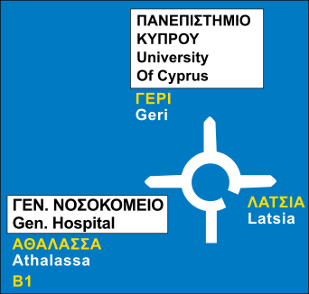

Loading...

Direction to destinations at a roundabout
ℹ Information Signs
📖 Description
This sign provides an advance diagram of the upcoming roundabout, showing each exit and the destinations they lead to. It helps drivers choose the correct lane and prepare for the required exit before entering the roundabout.